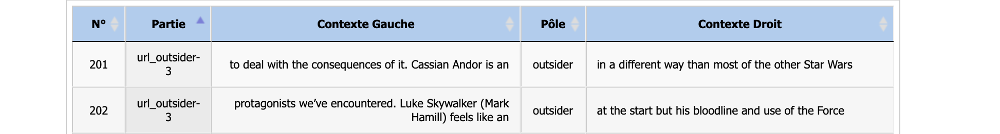

Analyse :
Itrameur ENG
Une fois que nous avons effectué nos aspirations, nous pouvons enfin créer les corpus de texte finaux, ceux que nous analyserons avec iTrameur pour répondre à notre problématique. Les corpus iTrameur sont crées à partir de tous les fichiers texte de dump des pages aspirées : on ne veut que le texte pour pouvoir l'analyser ensuite.
Étant donné que nous avons trois mots différents en anglais, nous avions réalisés trois séquences d'aspirations différentes et avions donc obtenu trois dossiers différents. Chacun de ces dossiers ont du être traités différement dû au fonctionnement du programme.
Une fois nos trois corpus de dumps-text crées, j'ai choisis de les réunir en un seul corpus. Pour ce faire, j'ai simplement crée un document avec une balise ‹langue="ENG"› qui englobe tous les corpus de l'anglais, chacun étant séparés par une balise ‹mot› ayant pour argument l'un des trois mot correspondants.
C'est donc ce corpus corpus_ENG.txt que j'ai importé dans iTrameur.
Ce corpus est composé de 109 dumps textuels d'URLs exploitables (dont le code renvoyé lors de l'extraction est 200). En chargeant le corpus dans iTrameur, on peut voir que le corpus contient 223132 occurrences pour 25767 formes distinctes.

L'importation et la segmentation se sont bien passées et nous pouvons donc vérifier que le corpus est bien formé en allant dans l’onglet Cadre à la rubrique Cadre qui permet de voir l’organisation du corpus et de vérifier l’imbrication des balises.
Nous avons donc pu nous assurer que notre corpus ne présentait aucun problème de balisage, chaque cadre étant délimité et correctement imbriqué dans le cadre dont il dépend.
Le but de cette analyse est de définir le contexte, les conditions d'utilisation et la définition de chacun de termes avant de confronter ces résultats à leur équivalent traductionnels dans les autres langues étudiées (allemand et français) pour en comprendre les similarités et les différences
Stranger
Commençons par nous intéresser aux formes [Ss]trangers?.
Dictionnaire
Tout d’abord, en allant dans la rubrique “Trame” > ”Dictionnaire” et en recherchant la forme stranger, qui correspond à notre sujet, nous avons pu observer la présence de diverses variétés de formes, toutes liées à notre recherche.
Étant donné qu'iTrameur ne tient pas compte de la casse, nous pouvons observer toutes les variations de forme de notre recherche. Ainsi, notre corpus présentait les formes "stranger", avec ou sans majuscules, mais aussi la forme dérivée "strangers" avec ou sans majuscules aussi. La forme la plus courante est "stranger" avec Fq = 175. Nous avons donc décidé d’utiliser la fonction Concordance pour observer les contextes d'apparition des formes stranger et Stranger. Notons que nous utilisons ici une partition par page car la forme apparaît aussi dans des pages aspirées correspondant à l'un des autre mot.
En observant les contextes, il est intéressant d'observer que le terme stranger apparaît souvent derrière le determinant indéfini a (équivalent de un/une en français). Pour vérifier cela, je me suis donc intéréssée aux coocurrents du mot.
Coocurrents
La fonction “Coocs” > “Coocurrences” d’iTrameur met en évidence la présence simultanée (mais non forcément contiguë) dans un fragment de texte des occurrences d'une forme donnée, stranger dans ce cas là et d'autres formes'. Pour le paramétrage, j'ai fixé le nombre de termes droite à 2 et ai laissé la valeur de base pour le nombre de termes à gauche à (celle-ci étant égale à 10).

On peut voir que notre hypothèse est vérifiée et que le mot stranger est très souvent associé à la forme a avec 88 occurences. Cette particularité nous renseigne sur le sens du mot : stranger désigne souvent une personne à la fois non identifiée par celui qui parle car inconnu. Et c'est ici qu'il est intéressant de remarquer qu'un équivalent traductionnel de "stranger" en français serait plutôt inconnu, un inconnu.
Outsider
Intéressons nous maintenant à la deuxième forme de notre corpus : outsider.
Tout d'abord, comme précédemment, nous allons venir observer la fréquence du mot grâce au Dictionnaire.
Dictionnaire

Ici, il est intéressant de remarquer que la forme avec majuscule initiale est plus fréquente que la forme miniscule.
De plus, on peut
remarquer la forme outsiderish dans la dernière ligne du tableau, néologisme qui n'apparaît qu'une seule fois dans le tableau. Notons que les guillemets visibles autour du mot semblent indiqué que la personne qui l'a employé
est consciente d'avoir fait un néologisme et d'avoir utilisé une forme qui n'existe pas et qui a été construite grâce au suffixe -ish qui permet la création d'adjectifs et qui sert à donner une valeur, un degré minimal à sa base. Ainsi, le mot signifierai ici quelque chose ou quelqu'un qui est un peu du domaine de l'outsider.
Pour expliquer ces divers phénomènes, intéressons-nous à présent aux contextes d'apparition de ces formes.
Contextes
En regardant les contextes de la première forme d'interêt Outsider, on peut voir que le mot est utilisé pour désigner un concept bien précis, celui d'Outsider Art qui désigne l'art crée par des autodidactes ou des artistes sans formation ou connaisssances artistique et ne font pas partie du milieu artistique. Ici, même si le concept est spécifique à l'art, on peut tout de même en tirer des informations sur le mot lui même : un outsider est quelqu'un qui ne fait pas partie d'un groupe donné et qui se soustrait donc de ses conventions, c'est quelqu'un de l'extérieur.
De plus, en regardant plus en profondeur les contextes, il est intéressant de remarquer que le mot peut être lié à une personne à l'identité définie ce qui le distingue du mot stranger.
Prenons par exemple ces trois occurences du mot :


Ici, on ne parle pas d'une personne inconnue contrairement à précédemment mais d'une personne dont l'identité a été définie.
Enfin, intéressons-nous à la forme "outsiderish" qui apparait dans la phrase suivante :
The confusion was more likely to result from “outsiderish” trends among trained artists than from any wish of outsiders to conform.
Grâce à nos observations précédentes sur la notion d'Outsider Art il devient facile de comprendre ce néologisme : "outsiderish" trends
signifie des modes (dans le domaine artistique) marquées par les spécificités de l' Outsider Art. Il est intéressant de remarquer que cette mise en parallèle
semble presque contradictoire et qu'elle met en avant une dimension positive dans l'utilisation d'outsider pour désigner quel'un ou quelque chose.
Foreigner
Étudions maintenant le mot foreigner.
Dictionnaire

En regardant les occurences du mot et de ses flexions, on peut remarquer que la forme plurielle foreigners apparait très fréquemment et presque autant que la forme singulier. Ainsi, cela reflète une particularité d'utilisation du mot qui est souvent utilisé pour désigner un groupe plutôt qu'un individu. Ceci est facilement observable en regardant les contextes d'apparition des occurrences :
Il n'est ici pas question d'identités distinctes mais d'un groupe distinct.
Segments répétés
En regardant les SR, j'ai remarqué plusieurs segements d'intérêt.


Ces trois expressions renvoie à un aspect négatif de la condition de foreigner ce qui ne transparait pas forcément
lors de l'étude des deux autres formes et de leur contexte. Le concept de discrimination et de stéréotypes sont des idées récurrentes
lorsque que l'on s'intéresse à la notion d'étranger en tant que personne qui n'est pas d'un pays, d'une nation donnée.
Ce sont des difficultés auxquelles peuvent être confrontés ceux considérés comme étrangers.
Enfin l'idée d'être un étranger à jamais, perpetual foreigner marque une distinction significative avec les deux autres termes.
Un inconnu ou stranger ne l'est que lorsque qu'on ne le connait pas mais cet état peu facilement changer. Un outsider semble
être distinct du groupe par ce qu'il ne se conforme pas aux règles qui en assure la cohésion. Mais ce statut aussi peut évoluer.
Et pourtant un étranger en tant que foreigner semble pouvoir être condamné à le rester : ce qui le distingue du groupe semble donc ne pas pouvoir être
changé.
Notons par ailleurs que ces idées sont liées comme le montre l'étude des contextes des SR dans lesquels ils apparaissent dans les même pages.

Coocurrents
Conclusion
Pour conclure, j'ai voulu voir s'il existait dans mes aspirations une page contenant les trois mots à la fois afin
de voir dans quel contexte ceux-ci pouvaient être rapprochés.
Pour ce faire, j'ai cherché les 3 pôles en même temps dans iTrameur et j'ai regardé le Dictionnaire. Grâce à cela, j'ai pu
relever la page correspondante à l'URL n°36 des URLs compilés pour stranger.
La page en question correspond à un article intitulé The Need to belong is part of being Human publié sur le site InterNation, site à destination des personnes souhaitant s'expatrier à l'étranger.

Dans cet article, Ximena Veliz s'intéresse à l'envie d'être accepté, d'appartenir à un groupe qui n'est originellement pas le nôtre. Elle cite par ailleurs la définition de foreigner telle que notée dans le Oxford English Dictionnary.
Dans la seconde définition, les trois termes semblent être synonymes, tous renvoyant à quelqu'un n'appartenant pas à un groupe social ou géographique.
Pourtant, nous avons pu voir que, bien que les trois termes soient similaires, ils présente chacun des particularités bien spécifiques qui les distinguent entre eux.
Ainsi, un outsider désigne bien quelqu'un qui n'appartient pas à un groupe donné mais est souvent utilisé pour désigner quelqu'un en particulier
et peut même présenter un aspect positif : c'est quelqu'un qui se soustraie aux règles du groupe, soulignant un degré de liberté important pour ceux qui sont désignés comme tel.
Avec stranger, on peut perdre un peu cette dimension de groupe au profit d'une dimension plus personnelle : on est un stranger par rapport à quelqu'un, on est un inconnu
par rapport à celui qui désigne. Ici, soulignons que la définition peut sembler porteuse d'un parti pris : le mot nous renseigne bien plus sur celui qui désigne que sur celui désigné.
Enfin foreigner englobe une dimension géographique forte.